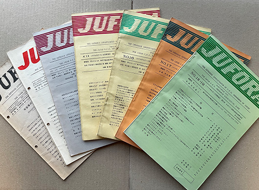
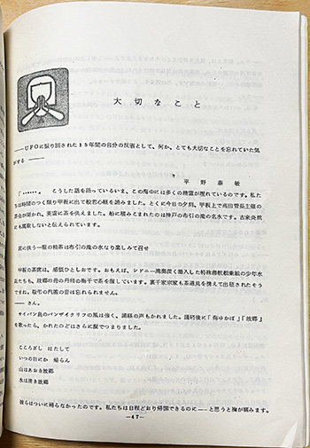
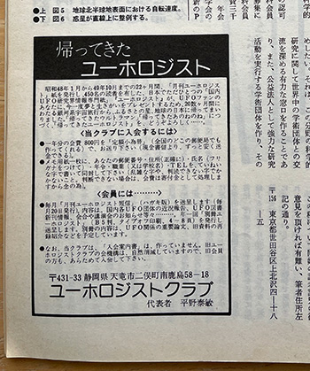

1970年代のUFOブームについて
70年代の日本UFO研究会について（1/2）
※この記事は2021年2月にブログに上げた記事の書き直しです。
「UFOと宇宙」誌 No.18（1976年6月号）に「オォ！UFO」と題する歌のレコード販売の囲み広告が載っていました。

A面は「オォ！UFOの歌入りとカラオケを収録しました」、B面は「現実再現ドラマ"UFOと斗った男"のジャック付きで「ゴッドマン空軍基地とその日を描いたマンテル事件」を収録しました」と説明があり、17cm LPステレオダブル盤 1,000円（荷造送料共）／500枚限定盤としています。
そして、現金送金先は「日本UFO研究会 レコード係宛」です。
いかにもペンネームっぽい、星乃銀平（作曲）、明星宏（作詞）は両方とも日本UFO研究会会長の平田留三氏であろうことが想像できます。
あらためて日本UFO研究会の機関誌「JUFORA」を読んでみると、とてもユニークな会であると思えてきました。それは、ひとえに会長の平田留三氏の個性によるものなのだと思うのですが、同時に、当時（の社会？）の雰囲気の一端を示すものだという気がしたので、少し紹介したいと思います。

日本UFO研究会と会長の平田留三氏のことを書く前に、まさにその機関誌No.16（1975年6月発行）に「大切なこと」と題して、ユーホロジストクラブ代表の平野泰敏氏が寄稿している文章について書きたいと思います。

この寄稿の副題は、「——UFOに振り回された15年間の自分の反省として、何か、とても大切なことを忘れていた気がする——」となっていています。
文章の冒頭は、なぜかいきなり、戦時中ニューギニア島で米軍機の爆撃を受け戦死した兵士たちの遺骨収集や戦死者たちの生い立ちを書いた二つの雑誌記事（雑誌『法光』の「いつの日か帰らん」(松原泰道著）という記事と、雑誌『宝石』の「遺骨配達人」(木村勝美著)という記事）からの長い引用（5ページにわたる）で始まっています。そして、平野氏は以下のように書きます。
なぜ私（平野）が、ここに、このような二つの小論文をを再録、ご紹介したのか、その理由は後述しますが、最近の私（特に本年に入ってからの）は、なぜか「UFO問題」に対し、急速に関心が薄くなって参りました。
日本UFO研究会機関誌JUFORA No.16 1975年6月発行 P.52
このように、UFO研究活動から退くこと、そして、その理由として自身の心情をエッセイの中で告白されます。
平野氏は、小学4年の頃にジェラルド・ハードの「地球は狙われている」に出会い、衝撃を受け、時をおいて中学3年のときに少年サンデーのUFO記事をきっかけに強い関心をもち、近代宇宙旅行協会のメンバーとなり、手紙での交流を通して高2の時に同会の機関誌のバックナンバーを全て入手したと書いています。
そして、遂にバックナンバーを全て手にしたときのうれしさ。これはおそらく一生忘れないことでしょう。これは今から10〜11年も以前のこと。世間の人々の大部分が、UFOなんてことに全く関心がなかった頃の出来事なのです。だから僕は（いや、当時の同会の実質的な会員の方々、100名ほどの人々は、）UFOに関心を持ている、そして少しづつでも資料を集めているということに対し、一種の「エリート意識」があったのです。これは昨今の異常ともいえる日本の第2期UFOブーム以来関心を持ち出したヤングの諸君から見たら、滑稽に見えるかも知れません。しかし、僕らは本当にに真面目にそう思っていたのです。
日本UFO研究会機関誌JUFORA No.16 1975年6月発行 P.54 下線は平野氏によるもの
ここで述べられていることは、当時のUFO研究家へのシニカルな批判を含めた、まさに自己批判です。そして、以下のように書いています。
その後、私は平田さんの日本UFO研究会に入会。平田さんの会のメンバーになってから、私はUFOの研究……（中略）……とは、ただ単に、目撃例を収集したり、それを分析することだけではない。もっと大きな意味として理解すべきである。と、考えられるようになりました。これは「JUOFRA」誌のバックナンバーを、読んで、私がそういう風になったわけで、平田さんに対し、本当に感謝したい気持ちです。
日本UFO研究会機関誌JUFORA No.16 1975年6月発行 P.54
ここで、日本UFO研究会について（とりわけ「JUOFRA」誌ののバックナンバーについて）言及されているわけですが、いったい日本UFO研究会機関誌のどういう点に平野氏はインスパイアされたのだろうと思ってしまいます。それは改めて考えるとして、平野氏の文章はさらに以下のように続いています。
今こそ、私は、大反省をし、もっと幅の広い、素直な人間になりたいと思います。人間として考えなければならないこと、世の為、人々の為に奉仕させていただかなければならないことは、本当に沢山、無数と言っていいほどあると思います。……（中略）……実は、本年の3月から、「月刊・合掌」という4頁のパンフレットを出すことになりました。私は、合掌という言葉がとても好きです。合掌の心「手を合わせ、心を合わせ、仕合わせに、おがみ会う私とあなたでよい社会」——これこそ人生の真理だと思います。
日本UFO研究会機関誌JUFORA No.16 1975年6月発行 P.55
このような仏教的な気づきと、当時の物価高騰状況、人々が利己主義的になっていることへの嫌悪、そして、この年が（それが冒頭の引用につながっているのだろうと思いますが）戦後30年という年であることなどから、「私たち日本人は、（そして私も無論そうでありますが）今こそ、大反省をする必要があると思います。」(日本UFO研究会機関誌JUFORA No.16 1975年6月発行 P.56)という強い想いが述べられています。
当時は、仏教的であるかどうかはともかく、ある種の自己批判的な気分が一部の若者の間に強くありました。ある種の、というのがなんであるかはここでは詳しくは書きませんが、それは戦後の直接的な戦争批判的な自己批判とも違う、当時にとっての現代的な気分だったように思います。
そう考えると、平野氏のこのような決意は、ご本人が「これは「JUOFRA」誌のバックナンバーを、読んで、私がそういう風になったわけで…」と書かれているものの、実際には、そういった時代的な気分による要因もあったのではないかと、僕は想像します。
ちなみに、その後のことですが、平野氏は「UFOと宇宙」誌のNo.19 （1976年8月号）に「帰ってきたユーホロジスト」という会員募集の広告を再び出していますので、紆余曲折はあったのだとは思いますが、いわゆる復帰を果たされています。
この広告には、昭和49年(1974年）まで22ヶ月活動してきた同会が、一旦休会状態になったのち、「20数ヶ月にわたる銀河系宇宙旅行から、故郷の星、地球の日本に帰ってきました。」と書かれていて、「帰ってきたウルトラマン」になぞらえているのが微笑ましいですが、実際、本人の中では、この期間にいい意味で宇宙旅行的転換があったのかもしれません。

なお、平野氏は上記の記事の中で「17,8年前の小学4年の頃」にUFOに興味を持ち始めたと書いているので、それが正しいとすれば、この広告を出された時点で30才前後と思われます。
僕は、初期のユーホロジストは購読していた（こちらの記事）ものの、この「帰ってきたユーホロジスト」についてはなにも知りません。平野氏がどのような新展開をしていたのか気になるところではあります。
というわけで、上記のようなエッセイが研究誌に載っているということ自体、日本UFO研究会のユニークな点なわけですが、本題の日本UFO研究会のことについては、後半として次回書きたいと思います。
今回は以上です。
記事一覧
-

70年代の日本UFO研究会について（2/2）
2026-01-12 -
70年代の日本UFO研究会について（1/2）
2026-01-12 -

70年代のUFOテレビ番組 私的まとめ
2026-01-12 -

70年代のUFOとポストモダン
2026-01-12 -

90年代のカルチャー誌のUFO特集
2026-01-12 -

70年代のアダムスキー動向周辺
2026-01-12 -

70年代日本UFO研究史-メインストリームではないものたち
2026-01-12 -

70年代のUFO展 私的まとめ
2026-01-12 -

UFO事件の「さみしさ」
2026-01-12 -

『美しい星』、CBA、平野威馬雄
2026-01-12 -

『定本 何かが空を飛んでいる』稲生 平太郎著
2026-01-12 -

『なぜ人はエイリアンに誘拐されたと思うのか』
2026-01-12 -

ブーム直前 ― 1973年
2026-01-02 -

はじめに
2026-01-01